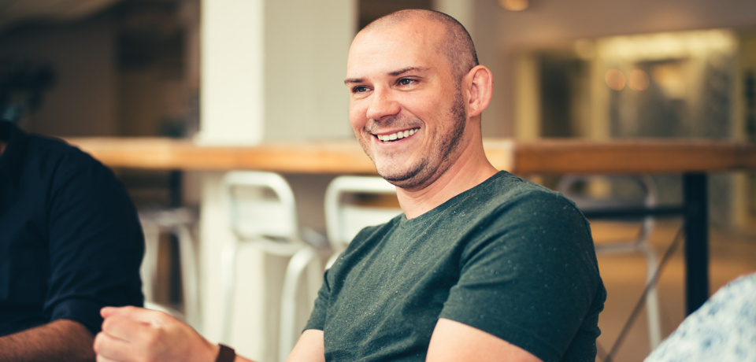

Hello, I’m Lukas – a senior experience designer at Adobe. I’m passionate about discovering problems with thoughtful research and exploring concepts through sensible process to arrive at beautiful and simple design solutions.
Biography
Expertise and Design Process
Senior experience designer involved in designing processes, end-to-end customer experiences, facilitating collaboration, nurturing alignment across departments, helping designers and non-designers do their best work, and helping organizations integrate design into their processes and structures.
- Competitive analysis
- User interviews
- Personalization
- Storycrafting
- Information architecture
- User Flow Mapping
- End-to-end product design
- Cross platform design
- Creative & Art Direction
- Experience strategy
- Complex systems modelling
Each company is unique so I employ an iterative and adaptable design process.
- Kickoff
- Stakeholder Interviews
- Experience Auditing
- Competitive Analysis
- Customer Support Data
- Business/Customer Needs
- User Research
- Usability Testing
- Workshops
- Identify scenarios/use cases
- Begin exploratory design strategy
- Experience goals/benchmarks
- Storyboarding Scenarios
- Investigate and validate concepts
- Define requirements
- Understand feasibility
- Create design estimates
- Execute Design Sprints
- Design UI Workflows
- Visual Designs
- User Research and Concept Testing
- Edge cases
- Review designs at sprint demos
- Support dev queries
- Usability Testing
- Design QA
- Usability Testing / A.B Testing
- Gather analytics
- Synthesize insights
- Create hypotheses of optimizations
Say Hello
To get in touch, write to bugla.lukas@gmail.com or view my LinkedIn profile to learn more. See work samples on Dribbble and follow me on Twitter for some random thoughts.